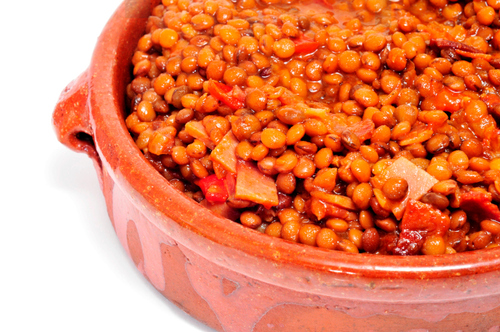

Guiso de lentejas

Sobre esta receta...
Esta sustanciosa receta de guiso de lentejas es ideal para las noches de
invierno. Es muy simple de preparar y sumamente deliciosa. La panceta es casi un ingrediente obligado, pero los
ingredientes se pueden elegir a gusto de los integrantes del hogar: con chorizo colorado, carne de ternera,
entre otras carnes.
Esta receta, además de ser rica en nutrientes como el hierro y proteínas, es un plato típico consumido en las
épocas de frío en toda la Argentina, especialmente en fechas patrias como el 25 de mayo. Descubre todas sus
bondades y prepárala en casa, ¡aquí te enseñamos cómo hacer guiso de lentejas con carne en pocos pasos!
Ingredientes para hacer Guiso de lentejas:
- 600 gramos de lentejas
- 150 gramos de panceta ahumada
- 200 gramos de roast beef
- 2 cebollas picadas
- 2 cebollas de verdeo picadas
- 2 tomates peritas en cubitos
- 3 cucharadas soperas de aceite
- Agua caliente
- 2 papas grandes
- 1 chorizo colorado
- 1 pimiento rojo cortado en cubos
- sal
- pimienta
- aji molido
- 3 hojas de laurel
Cómo hacer Guiso de lentejas:
- Corta en rodajas el chorizo colorado y cada rodaja en cuartos. Colócalos en una ollita
con agua a fuego medio hasta que hierva por 10 o 15 minutos, así se desgrasan. Escurre el agua y reserva
el chorizo.
- Corta la panceta en cubos. Primero, dora en una olla a fuego fuerte la panceta. Cuando
suelte su grasa,
agrega el chorizo colorado que habías desgrasado. Una vez dorados ambos ingredientes, retíralos y
resérvalos.
- Corta la carne en cubos y échala en la olla con el fondo de cocción que quedó de la panceta y el
chorizo. Gira la carne para sellarla en todos sus lados. Luego retírala y resérvala.
- Pon en la cacerola las cebollas y las cebollas de verdeo picadas, junto con el pimiento rojo cortado en
cubos. Coloca una cucharadita de sal. Revuelve hasta que la cebolla este transparente.
- Agrega los tomates cortados en cubos. Revuelve todas las verduras unos 3 minutos.
- Una vez las verduras estén blandas, coloca las tres carnes que habías reservado: la panceta, la carne y
el chorizo colorado. Revuelve todo muy bien.
Truco: Cuando eches la carne, puedes agregar medio vaso de vino y esperar que se
evapore el alcohol.
- Luego, coloca las papas cortadas en cubos. Mueve bien hasta que esté todo integrado.
Agrega los condimentos, la sal, la pimienta, el ají molido y revuelve muy bien.
- Añade las lentejas, previamente remojadas. Revuelve bien.
Truco: Es recomendable que remojes las lentejas 3 horas aproximadamente antes de
usarlas.
- Agrega agua caliente hasta tapar todos los ingredientes y añade 2 o 3 hojas de laurel, revuelve.
Colócale la tapa a la olla y deja cocinar a fuego medio.
Cada tanto revuelve la preparación del guiso de lentejas fácil y, si hace falta, agrégale más agua
caliente para no cortar la cocción.
- Cuando veas que todo está cocido, apaga el fuego y tapa la olla. Es ideal que dejes
reposar este guiso
de lentejas tradicional unas horas para que los sabores se concentren más y quede más sabroso.
- Por último, sirve el guiso de lentejas con chorizo en cazuelas. Si deseas, puedes espolvorear perejil
picado por arriba.
Inicio